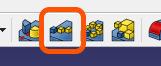

모델링 관련
스케치 생성
스케치를 생성해줍니다.
평면 생성
{kind=link}
평면을 생성해줍니다.
돌출
스케치의 모양대로 높이를 만들어 줍니다.
회전
{kind=link}
스케치의 모양을 특정 축을 기준으로 회전시켜 부피를 생성해 줍니다.
돌출 컷
{kind=link}
스케치의 모양대로 부피를 제거하는 방향으로 높이를 만들어 줍니다.
그루브
{kind=link}
스케치의 모양을 특정 축을 기준으로 회전시켜 부피를 제거해 줍니다.
선형 패턴
{kind=link}
만들어진 도형을 직선 방향으로 복사 이동 해줍니다.
필렛
{kind=link}
모서리를 둥그렇게 만들어 줍니다.
모따기
모서리를 깍아 각지게 만들어 줍니다.
원 생성
원을 그려줍니다.
자유곡선 생성
이어진 직선을 그려줍니다.
사각형 생성
{kind=link}
사각형을 그려줍니다.
다각형 생성
{kind=link}
다각형을 그려줍니다.
직선 홈 생성
{kind=link}
직선 홈(Slot)을 그려줍니다.
잘라내기
그려진 스케치의 일부를 잘라내줍니다.
외부 Geometry
만들어진 도형의 외형을 스케치로 투영합니다.
Geometry 타입 변경
{kind=link}
스케치에 그려진 객체의 타입을 변경합니다.
실선 <-> 보조선
제약조건 : 점 일치
{kind=link}
스케치의 점과 점을 일치시켜 줍니다.
제약조건 : 점을 선에 일치
{kind=link}
스케치의 점을 선에 일치시켜 줍니다.
제약조건 : 수직
스케치의 선을 수직으로 만들어 줍니다.
제약조건 : 수평
{kind=link}
스케치의 선을 수평으로 만들어 줍니다.
제약조건 : 평행
두개의 선을 평행으로 만들어 줍니다.
제약조건 : 수직(직각)
두개의 선을 직각으로 만들어 줍니다.
제약조건 : 접함(탄젠트)
{kind=link}
곡선과 직선이 접하도록 만들어 줍니다.
제약조건 : 동일
{kind=link}
두 개의 객체를 동일한 치수로 변경해줍니다.
제약조건 : 대칭
두 개의 객체를 한 축을 기준으로 대칭되게 합니다.
제약조건 : 수평 거리
두 지점의 수평거리를 측정, 설정합니다.
제약조건 : 수직 거리
{kind=link}
두 지점의 수직 거리를 측정, 설정합니다.
제약조건 : 지름
원의 지름을 설정해줍니다.
제약조건 : 각도
{kind=link}
두 선의 사잇각을 설정해줍니다.